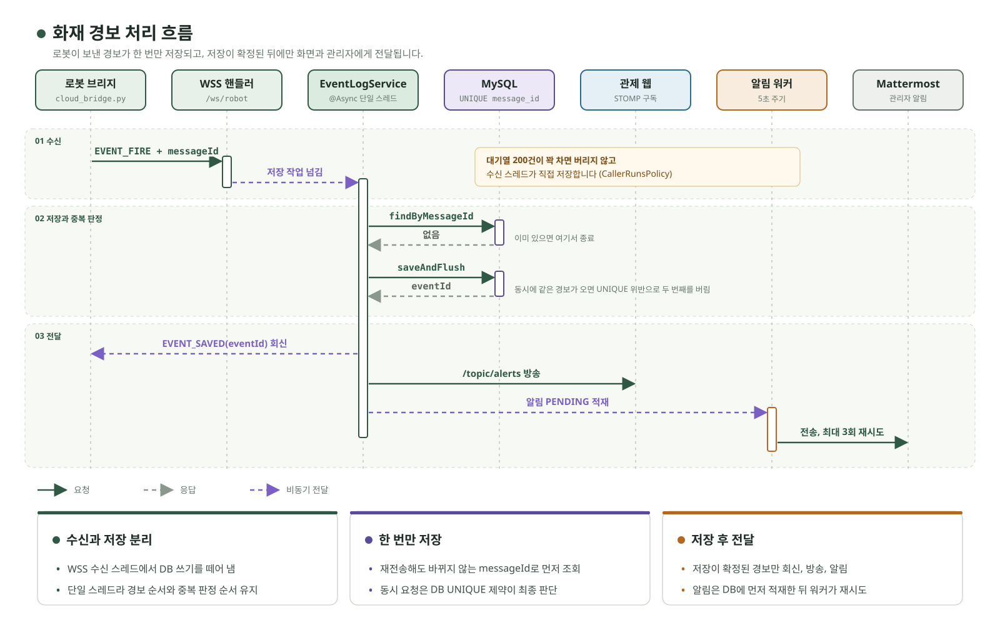
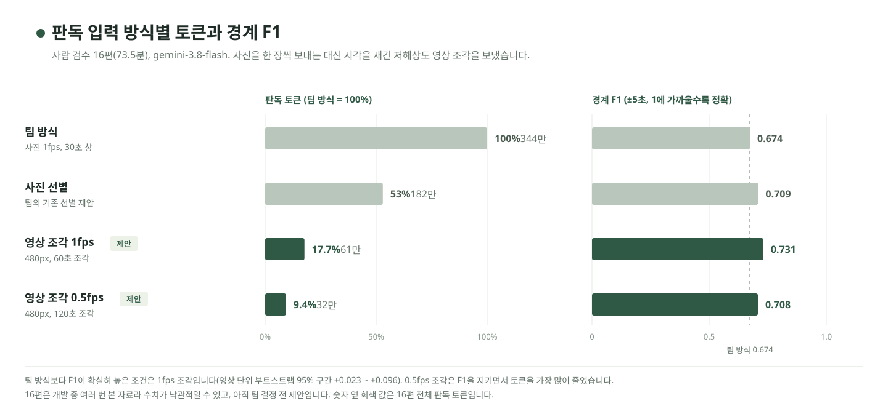
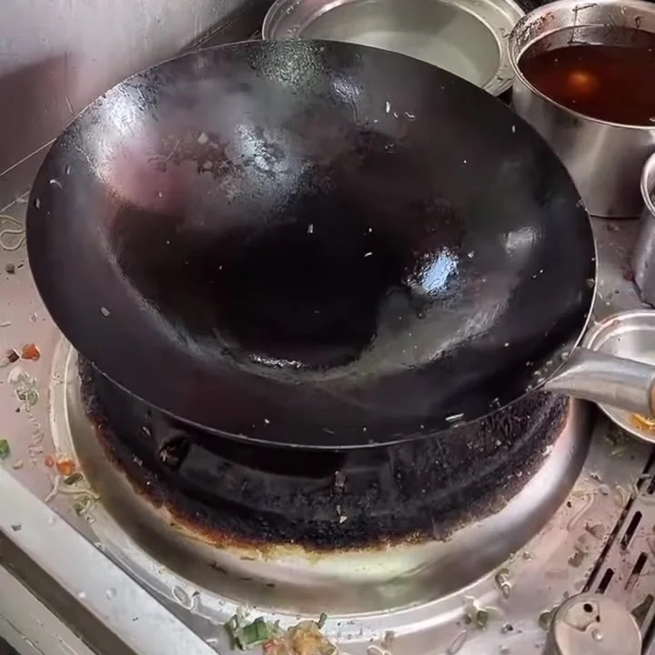
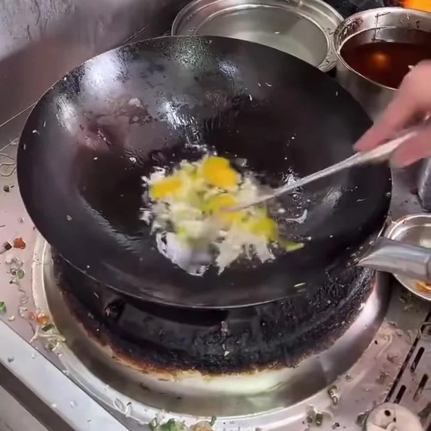
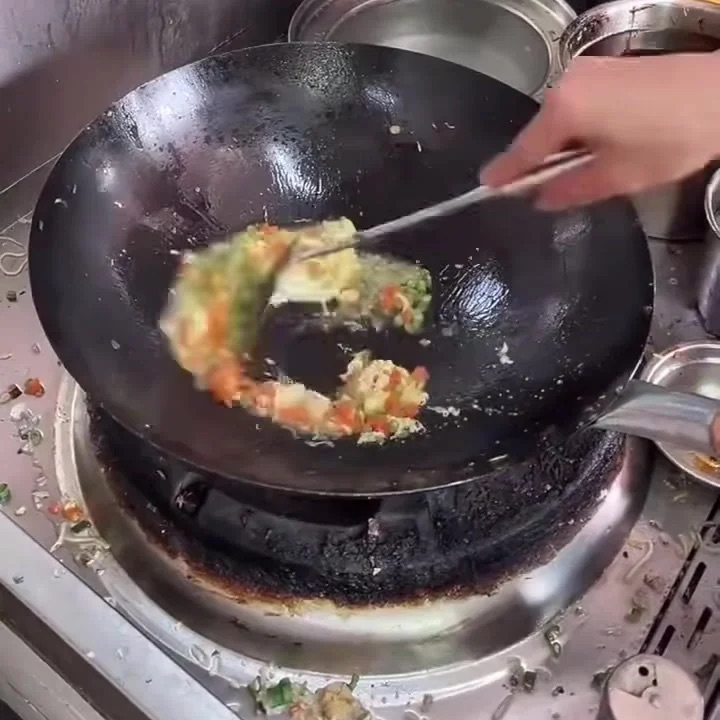
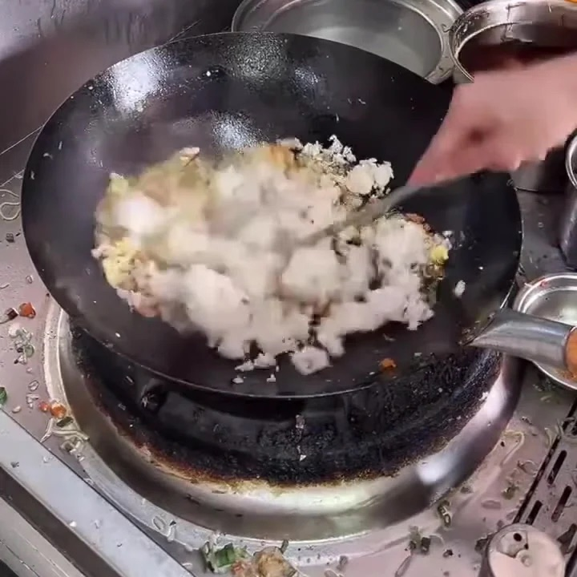

사람들이 실제로 불편해하는 부분을 기술로 풀어낼 때 가장 큰 보람을 느낍니다. Java와 Spring Boot로 여행 일정 API와 로봇 관제 서버를 만들었습니다. 특히 버튼을 두 번 누르거나, 로봇이 같은 경보를 다시 보내거나, 두 사람이 같은 일정을 동시에 고칠 때 데이터가 꼬이지 않게 하는 일에 관심이 많습니다. 막는 방법은 DB에 맡기고, 정말 막히는지는 되도록 실제 DB에서 테스트로 확인합니다. 지금은 로보터블과 함께 요리 영상을 행동별 구간으로 나누는 기업연계 프로젝트를 하고 있습니다.
Java 전공자 과정, 1학기 925시간 이수, AIoT 공통 및 특화 프로젝트, 로보터블 기업연계 프로젝트 진행 중
AI 프런티어 글로벌 해커톤 연수
캐나다 현지 교육, AI 로봇카 프로젝트 참여
써트맵(CERTMAP) 창업 프로젝트
백엔드 개발, 하나 소셜벤처 유니버시티 우수팀
창업동아리 UniCorn
운영진과 개발 트랙, Figma와 FigJam 실습 교육, 서비스 기획
고신뢰소프트웨어 연구실
학부연구생으로 YOLO 객체 탐지 모델과 RAG 아키텍처를 세미나로 공부
창원대학교 컴퓨터공학과
학사 졸업, 학점 3.61 / 4.5
수상
SSAFY 특화프로젝트 우수상 (가볼래)
SSAFY 공통프로젝트 우수상 (삐용)
경남권 대학생 창업동아리 창업역량강화교육 우수상 (써트맵)
교내 소프트웨어 전시회 인기상 (빈자리)
SW 창업아이디어 경진대회 최우수상 (숏폼 자막 서비스 기획)
스마트제조ICT 캡스톤 경진대회 장려상 (산업재해지키미)
02 / 프로젝트 1: 실시간 로봇 관제
삐용BBIYONG SSAFY 공통프로젝트 우수상
2026.07 ~ 08, 6인 팀, 팀장
공장을 자율 순찰하는 로봇의 위치, 영상, 화재 경보를 웹에서 보고 원격으로 조종하는 시스템입니다. 저는 로봇과 웹 사이의 관제 서버를 만들고, 무선 환경에서 재전송된 경보도 한 번만 기록되게 했습니다.
맡은 역할
팀장, Spring Boot 관제 서버, 로봇/웹 통신, 경보 저장과 인증, 릴리스 통합
사용 기술
Java 17, Spring Boot, WebSocket, STOMP, WebRTC(WHEP), MySQL 8, Docker
같은 경보가 여러 번 와도 1건만 저장messageId와 MySQL 고유 제약으로 중복을 막고, DB 저장은 비동기로 분리해 수신을 막지 않게 했습니다.
6초 늦던 원격 조종 영상을 WebRTC로 전환HLS 재생이 약 6초 늦어 원격 조종에 쓸 수 없었습니다. WebRTC(WHEP)로 바꾼 뒤 탐지 박스를 영상에 맞추는 보정값을 6초에서 0.3초로 줄였습니다.
로봇과 관제 웹의 실시간 통신 구축로봇 측 연결 코드가 없던 시점에는 cloud_bridge.py를 직접 작성해 통신부터 열었습니다.
팀장으로 6인 팀의 개발 규칙과 코드 통합Jira 운영 규칙과 브랜치 전략을 정하고, 파트별 코드를 릴리스로 통합했습니다.

서버가 맡은 경보 처리: 수신과 DB 저장을 분리하고, 중복은 MySQL 고유 제약으로 최종 확인합니다.
같은 경보 100번 동시 수신
1건 저장32개 스레드, 중복 0
최근 24시간 경보 통계 조회
55.9 → 4.9ms검사 행 19.9만 → 6,642
특정 로봇의 24시간 기록 조회
62.7 → 1.3ms복합 인덱스
02 / 프로젝트 1: 트러블슈팅 (프로젝트 종료 후 개인 작업)
외래키가 없어 잘못된 참조가 그대로 저장되던 문제
문제
프로젝트가 끝나고 ERD를 다시 그려 보니, 테이블 사이에 외래키가 하나도 없었습니다. 실제로 없는 이벤트 ID로 영상을 등록해도 API가 아무 문제 없이 받아 주고 있었습니다.
해결
외래키를 모든 관계에 똑같이 걸지 않고, “이벤트가 지워지면 이 데이터는 어떻게 돼야 하지?”를 관계마다 따졌습니다. 알림 발송 기록은 같이 지우고(CASCADE), 증거로 남아야 하는 영상은 연결만 끊었습니다(SET NULL).
고려한 점
경보가 가리키는 설비와 지도에는 외래키를 걸지 않았습니다. 등록되지 않은 설비 기준으로 경보가 오면 저장 자체가 실패하기 때문입니다. 화재 경보를 통째로 잃는 것보다 참조가 조금 어긋나도 남는 편이 낫다고 봤습니다.
결과
스키마를 Flyway로 옮기고, 테스트 220건이 GitHub Actions에서 실제 MySQL 8 위로 자동 실행되게 했습니다. 처음 봤던 영상 등록 문제가 이 테스트에서 걸려, 지금은 400으로 거절합니다.
남은 과제
알림 워커가 외부 HTTP 호출을 트랜잭션 안에서 해서, 커밋이 실패하면 같은 알림이 두 번 나갈 수 있습니다. 외부 호출을 트랜잭션 밖으로 빼는 것이 다음 할 일입니다.
다른 트러블슈팅
배포 서버 방화벽에 로봇 연결이 막혔습니다TCP 9000을 Nginx 경유 WSS 443으로 바꾸고 메시지 형식은 그대로 둬, 로봇과 웹 파트는 연결 주소만 바꾸면 되게 했습니다.
다시 연결된 로봇이 오프라인으로 보였습니다늦게 도착한 옛 연결의 종료 처리가 새 연결 정보를 지우고 있어, 새 연결을 등록하기 전에 옛 연결부터 정리하도록 순서를 바꿨습니다.
영상이 끊기고, 고친 뒤에도 6초 늦었습니다제가 웹 재생을 WebRTC(WHEP)로 바꾸는 일을 맡았고, 탐지 박스 보정값을 6초에서 0.3초로 줄여 운영했습니다.
중복 경보를 막는 핵심 코드
AsyncConfig.javaEventLogService.javaJava
// 대기열이 꽉 차면 버리지 않고 받은 스레드가 직접 저장executor.setQueueCapacity(200);executor.setRejectedExecutionHandler(newThreadPoolExecutor.CallerRunsPolicy());// messageId에는 MySQL UNIQUE 제약try { savedEvent = eventLogRepository.saveAndFlush(logEntry);} catch (DataIntegrityViolationException duplicateMessageId) {rollbackDeduplication(deduplication); // 이미 저장된 경보return;}
03 / 프로젝트 2: 여행 계획 서비스
가볼래GABOLLE SSAFY 특화프로젝트 우수상
2026.08 ~ 09, 6인 팀, 여행과 일정 API 담당, Java 17, Spring Boot, JPA, PostgreSQL, Flyway, FLY ASIA 2026 전시(2026.10)
트러블슈팅: 같은 요청이 동시에 오면 여행이 중복 생성되던 문제
문제
응답을 못 받은 사용자가 같은 요청을 다시 보내면, “키가 있나?” 조회와 저장 사이의 틈 때문에 두 요청 모두 여행을 만들었습니다.
고려한 점
서버 안의 락은 서버가 여러 대면 소용이 없어, 모든 서버가 같이 쓰는 DB에 판단을 맡겼습니다.
해결
요청 키를 먼저 DB에 넣어 보고, 들어간 요청만 여행을 만듭니다. 같은 내용이면 기존 결과(200), 다른 내용이면 409입니다.
추가 문제
SAVEPOINT 방식이 PostgreSQL 테스트에서만 실패해, ON CONFLICT DO NOTHING으로 저장된 행이 0개인지 보고 판단하게 바꿨습니다.
결과
같은 키로 요청 8건을 동시에 보내도 여행은 1건만 생깁니다. 프로젝트 후 실제 PostgreSQL에서도 다시 확인했습니다.
JpaTripRepository.javaJava
int inserted = entityManager.createNativeQuery("INSERT INTO trip_idempotency (...) VALUES (...) " + "ON CONFLICT (user_id, idempotency_key) DO NOTHING").executeUpdate();if (inserted == 1) { // 키를 차지한 요청만 생성 (201)save(trip, tripConstraints, owner, snapshot);returnnewSaveOutcome(trip, snapshot, true);}if (!existingFingerprint.equals(fingerprint)) // 같은 키, 다른 내용 (409)thrownewIdempotencyKeyConflictException(idempotencyKey);returnnewSaveOutcome(existingTrip, existingSnapshot, false); // 200
두 사람이 동시에 고쳐도 변경이 사라지지 않게“내가 본 버전”이 DB 최신 버전과 같을 때만 수정하고, 다르면 409로 최신 일정을 다시 받게 했습니다.
서버를 재시작하면 사라지던 이벤트 기록을 DB에 저장메모리에 쌓이던 사용자 이벤트를 PostgreSQL Outbox 테이블에 저장하도록 바꿨습니다.
팀원들의 AI 코딩 도구가 같은 파일을 고치지 않게 (axMap)고치기 전에 파일을 먼저 예약하는 팀 도구입니다. 저는 예약이 겹치는지 판단하는 규칙을 설계하고 검증했습니다. 경로를 / 단위로 비교해 src/auth 예약이 src/authz까지 막지 않게 했습니다. 개발 기간 예약 3,629회, npm 누적 다운로드 23,794회.
여행 생성 API의 중복 요청 처리 흐름
04 / 프로젝트 3: 요리 영상 분석 (기업연계, 진행 중)
요리 영상 구간 분할ROBOTABLE × SSAFY 로보터블 기업연계
2026.10 ~ 진행 중, 6인 팀, Python, PyTorch, scikit-learn, OpenCV, FFmpeg, Gemini API
고정된 화각의 요리 영상을 행동별 구간으로 나누는 프로젝트입니다. VLM으로 영상 전체를 분석하면 토큰을 너무 많이 써서, 토큰을 줄이면서 구간을 찾는 방법론을 찾는 것이 과제입니다. 팀원마다 경계 검출 논문을 적용해 S1(예상 구간 추출) 방법을 고르고, 이를 근거로 S2~S4의 최적 방법을 찾고 있습니다. 저는 S1 방법 비교와 VLM 입력 방식 실험을 맡고 있습니다.
사진 대신 영상 조각을 보내 판독 토큰 90% 절감원본 시각을 새긴 480px 영상 조각으로 바꿔, 사람 검수 16편에서 토큰은 팀 방식의 9.4%, 경계 F1(±5초)은 0.674 → 0.708로 떨어지지 않았습니다.
경계 검출 논문의 방법을 S1에 적용해 비교KTS, PELT, GEBD 방법부터 지도학습 TCN까지 같은 조건으로 비교했습니다. 최고 F1(±3초) 0.800으로 목표 0.90에 못 미쳤고, 병목이 행동 상태 판독에 있음을 확인했습니다.
트러블슈팅: AI 라벨로는 0.79였던 모델 점수가 사람 정답에서는 무작위 수준이던 문제
문제
AI 라벨로 학습하고 평가해 F1(±3초) 0.792가 나온 팀 모델이 있었습니다. 학습과 같은 AI 라벨로 매긴 점수였습니다.
검증 방법
모델을 고치지 않고 사람 검수 16편에 적용하고, 같은 개수를 무작위로 찍은 기준선과 Gemini 판독을 같은 정답·매칭 코드로 채점했습니다.
결과와 원인
F1 0.204, 무작위 0.196과 같았습니다. AI 라벨은 분당 23.4개의 경계를 가르쳤고 사람 정답은 분당 3.8개였습니다.
해결 제안
학습 라벨의 경계 기준을 사람 쪽에 맞추는 일을 먼저 하자고 제안했습니다. 조리 단계 중심 규칙으로 다시 학습하자 0.204 → 0.385가 됐습니다.

모델과 추론 설정은 그대로 두고 입력만 바꿨습니다. 팀 결정 전 제안이며, 16편은 개발 중 여러 번 본 자료라 수치가 낙관적일 수 있습니다.

00:00 준비

00:20 달걀 투입

00:30 채소 넣고 볶기

01:10 밥 투입
판독 토큰
100 → 9.4%영상 조각 0.5fps, F1 0.708
경계 F1 (±5초)
0.674 → 0.731영상 조각 1fps, 토큰 17.7%
AI 라벨 점수 재검증
0.792 → 0.204사람 정답, 무작위 0.196
구상 중 요리 영상을 올리면 구간을 나눠 레시피, 숏츠, 블로그용 레시피로 만들어 주는 B2C 앱
특정 시간대만 되면 캠퍼스 주차장에서 빈자리를 찾느라 스트레스를 받는다는 이야기를 자주 들었습니다. 주차면마다 센서를 달면 장비와 설치에 비용이 많이 들어, 카메라 영상만으로 풀어 보고 싶었습니다. 저는 분석 서버를 맡아, 차가 잠깐 가려져도 상태가 흔들리지 않는 판정 로직을 만들었습니다.
차량 탐지 결과를 주차면별 상태로 변환박스와 주차면이 겹치는 면적, 모델 신뢰도를 함께 보고 어느 자리의 차인지 정했습니다. 프로젝트 때 57면으로 운영했고, 끝난 뒤 좌표가 겹친 1면을 정리해 56면입니다.
차가 잠깐 가려져도 상태가 흔들리지 않게차가 있는 자리를 비었다고 안내하면 운전자가 헛걸음을 합니다. 차가 들어온 건 5번, 빠진 건 8번 연속으로 확인해야 상태를 바꿉니다.
모델 추론 횟수 80% 절감5프레임 중 1개만 분석합니다.
프로젝트 이후 발견한 잘못된 통계 데이터 수정기록이 없는 시간대는 has_data=false로 구분하고, 두 주차장이 같이 쓰던 주차면 ID는 기본키를 (parking_lot, id)로 나눴습니다.
탐지 결과에서 앱의 주차 안내까지왼쪽 차량 탐지 결과 → 오른쪽 서버가 확정한 주차면별 상태
06 / 프로젝트 5: 학습 계획 서비스 (창업 프로젝트)
써트맵CERTMAP 부산 U창업 패키지 선발
2025.03 ~ 12, 5인 창업팀, 백엔드, Java 17, Spring Boot, Spring Security, JWT, OAuth2, MySQL, 출시 전 MVP 단계
써트맵은 시험일과 교재를 넣으면 AI가 하루 단위 학습 계획을 짜 주고, 공부한 내용을 문제로 점검하고, 못 끝낸 계획은 다음 날로 옮겨 주는 학습 관리 서비스입니다. 저는 백엔드를 맡아 API와 데이터 구조를 설계하고, 로그인 기능을 구현했습니다. 회원, 자격증, 학습계획 API와 MySQL DB는 당시 로컬에서 작업해 공개하지 못했고, 공개 저장소에는 인증 서버만 있습니다.
사용자 조사로 서비스 방향을 바꿨습니다직업별 자격증 추천으로 기획했지만, 취업 준비생 100명에게 설문과 인터뷰를 해 보니 진짜 고민은 “정해진 시간 안에 어떻게 공부할까”였습니다.
본조사로 문제를 수치로 확인했습니다이후 본조사(인터뷰 43건, 설문 165건)에서 실패 이유 1위는 계획 부재(23.5%), 학습 만족도는 5점 중 2.8점이었습니다.
JWT 로그인과 소셜 로그인 구현JWT 로그인과 구글, 카카오, 네이버 소셜 로그인을 구현했습니다.
팀 성과
부산 U창업 패키지 선발, 서울대 대학연대 창업 네트워크 캠프 우수상, 학생 창업유망팀 300 성장트랙A, 하나 소셜벤처 유니버시티 우수팀, 린스타트업(동남권) 2단계, 경남권 창업역량강화교육 우수상, 교내 G-SCOUT 선정 (2025.06 ~ 09)